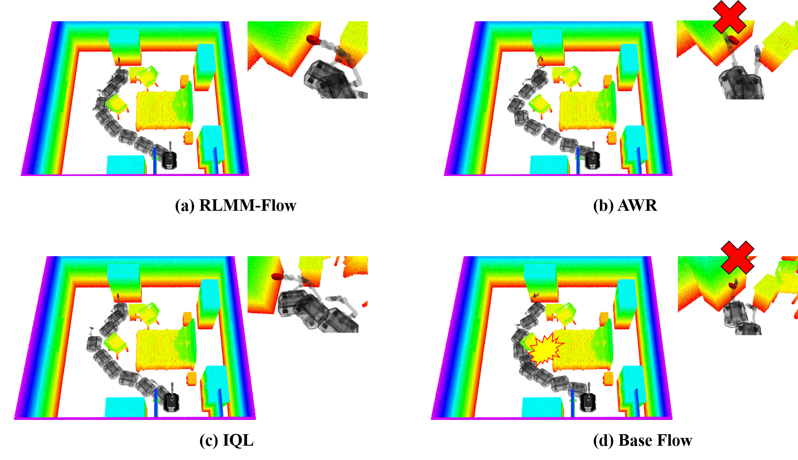

Simulation and real-world performance of RLMM-Flow.
Abstract
RLMM-Flow extends latent-space reinforcement learning to point-cloud-conditioned
flow policies for mobile manipulation. It first pretrains a cascaded transformer
flow policy on expert whole-body trajectories, then learns a latent actor to
steer the flow latent noise while keeping the generative policy frozen.
This enables reward-guided improvement without directly optimizing the
high-dimensional action chunk space.
RLMM-Flow Pipeline

Pipeline overview of RLMM-Flow.
The training pipeline contains two stages. First, a flow policy is pretrained
using high-quality expert trajectories to learn a stable whole-body trajectory
prior. Second, offline reinforcement learning optimizes a latent actor and
latent critic. Instead of modifying the flow network, the learned latent policy
steers the initial noise distribution, and the frozen flow model decodes the
optimized latent into feasible action chunks.
Network Architecture

Network architecture of the cascaded transformer flow policy.
The policy receives robot-centric local point clouds, robot state, task target,
and flow time embedding. A Point Transformer encodes the geometric scene
representation. The action generation network uses cascaded Transformer blocks:
the base trajectory is generated before the arm trajectory, explicitly modeling
the heterogeneous structure between mobile base motion and manipulator motion.
Qualitative Comparison of Whole-body Trajectories

Qualitative visualization of whole-body trajectories generated by different offline RL post-training methods.
Compared with other offline RL post-training methods, RLMM-Flow generates
more physically feasible whole-body trajectories. The generated base path
maintains safer clearance from obstacles, while the manipulator motion becomes
more compact near the target region. These improvements are consistent with
the quantitative gains in collision rate, trajectory smoothness, and arm path
length.
Quantitative Results
Simulation: Offline RL Post-training
| Method | Success ↑ | Collision ↓ | Joint Viol. ↓ | Smooth ↓ |
|---|---|---|---|---|
| DSRL-NA (Flow) | 40 | 21 | 14 | 0.22 |
| RLMM-Flow-QA | 42 | 18 | 9 | 0.20 |
| RLMM-Flow-CF | 43 | 15 | 12 | 0.22 |
| RLMM-Flow | 46 | 12 | 8 | 0.19 |
+6%
Success improvement over DSRL-NA
Success improvement over DSRL-NA
-9%
Collision reduction over DSRL-NA
Collision reduction over DSRL-NA
0.21s
Inference time
Inference time
Real-world Results
RLMM-Flow is deployed directly on a mobile manipulator without real-world
fine-tuning. It achieves 32% success rate, 9 collision events,
and 6 joint violations over 50 trials while maintaining fast inference.